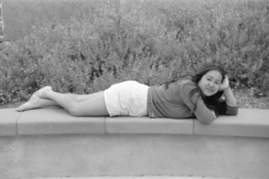

|
|
 |
Originally from Savannah, Georgia Rika is an undeclared Earth System Science Policy major at CSUMB. ~ Although Rika has not decided on any one career she hopes to do something that makes her happy well at the same time helping others. ~ Rika believes CSUMB is a great school full of many opportunities and a place one can find them selves. ~ Currently involved in Residence Hall Association, Women's Rugby, Roteract, and Drum Corps Rika keeps herself occupied. ~ Her involvement in campus organizations grew from her desire to make a difference in her community.
- Taken in the main Residence Hall quad this image was shot
with Kodak CN400 to allow for faster development.